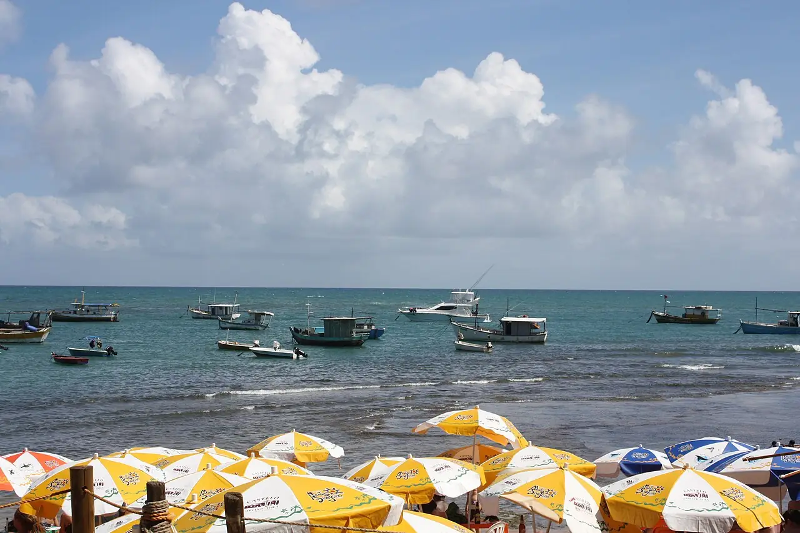

Praia do Forte
Bahia, Brésil · snorkeling, baignade

Village de la Costa dos Coqueiros, au nord de Salvador, où se trouve une base du projet TAMAR de protection des tortues marines. À marée basse, les récifs forment des piscines naturelles propices au snorkeling.
- Lieu
- Bahia, Brésil
- Niveau
- Débutant
- Activités
- snorkeling, baignade
- Type d'eau
- Mer / océan
- Coordonnées
- -12.58, -38.01 (position approximative du secteur)
Dangers à connaître
- Récifs peu profonds : ne marche pas dessus.
- Courants hors des piscines naturelles, surtout quand la marée monte.
Le conseil d'Ocean Buddy
Sors avec masque et tuba à marée basse, sans jamais marcher sur le corail.
Ouvrir dans Ocean Buddy Télécharger sur l'App Store
Source : Fiche Ocean Buddy · septembre 2026 · à vérifier localement.